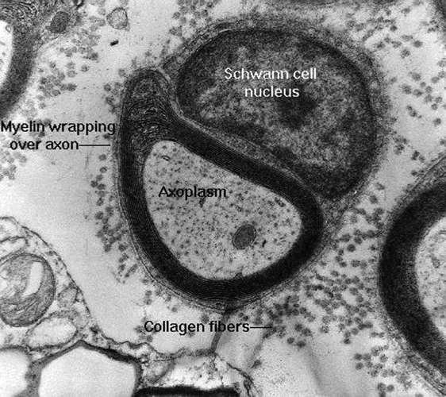

Gemyeliniseerde en niet-gemyeliniseerde axonen

Op dit elektronenmicroscopisch beeld zie je een typische dwarse snede door een gemyeliniseerde zenuwvezel. Ook de nucleus van een cel van Schwann is zichtbaar. De coupe is ongeveer door het midden van een segment van de schede gemaakt. Je ziet hier heel duidelijk hoe de plasmamembraan van de cel van Schwann in lagen rond het axon is gewikkeld. Deze windingen, die nagenoeg geen cytoplasma bevatten zijn door hun hoog vetgehalte ideale isolatielagen voor het axon.
Het cytoplasma van het axon heeft een vrij neutraal uitzicht maar omvat toch een aantal structuren die belangrijk zijn voor de normale werking. Het grote, ovale object is een van de mitochondria die, zoals te verwachten is, vrij talrijk voorkomen in het axon aangezien ze energie leveren voor de natrium-kalium-pomp-cyclus die nodig is om het potentiaal tussen de membranen op een normaal niveau te houden. De kleine cirkelvormige structuren zijn microtubuli. Zij zorgen ervoor dat het axon zijn normale vorm behoudt en ze “gidsen” bepaalde substanties zoals neurotransmitters die in het perikaryon zijn gesynthetiseerd, naar hun bestemming in het eindpunt van het axon. Ook sterk vertegenwoordigd in het axon zijn de microfilamenten, die hier zichtbaar zijn als de kleine vlekjes die gelijkmatig over het beeld verdeeld zijn. Samen met de microtubuli vormen deze structuren het cytoskelet.
Ter vergelijking werd een niet-gemyeliniseerd axon opgenomen dat omringd is door gemyeliniseerde axonen. De schede bestaat hier uit slechts een enkele winding van de cel van Schwann evenals een kleine hoeveelheid cytoplasma; ze is ook veel minder complex dan de myelineschede. Bemerk tevens het verschil in omvang tussen dit axon en zijn gemyeliniseerde buren. Gemyeliniseerde vezels kunnen veel groter worden en dus in veel hogere mate “stroom” geleiden dan hun niet-gemyeliniseerde tegenhangers. Dit hebben ze over het algemeen te danken aan hun zeer efficiënte isolatie. Indien het niet-gemyeliniseerd axon hier even groot zou zijn als de gemyeliniseerde exemplaren, zou het transmembraneus potentiaal heel wat lekken vertonen door de beperkte isolatie van de neurolemmocytschede. Bovendien heeft myelinisatie nog tot voordeel dat de impulsen veel sneller geleid worden in vergelijking met niet-gemyeliniseerde vezels van dezelfde grootte. Bij een niet-gemyeliniseerde vezel dient het membraan van het axon eerst over zijn gehele lengte gedepolariseerd en opnieuw gepolariseerd te worden alvorens het signaal kan worden doorgegeven; bij de gemyeliniseerde vezels daarentegen “springt” het signaal van de ene insnoering naar de andere. Dankzij dit proces van sprongsgewijze geleiding moeten slechts kleine delen van het membraan (de insnoeringen dus) gedepolariseerd worden. Vandaar dat dit systeem veel sneller en veel beter geschikt is om signalen te versturen via lange vezels, zoals bv. de motorische neuronen die het spierstelsel bezenuwen.
De ronde, grijze structuren in de ruimtes rond de axonen zijn de fijne collageenvezels van het endoneurium.
Perifere zenuw, vogel; TEM-preparaat, uranium/loodkleuring, 50.000x